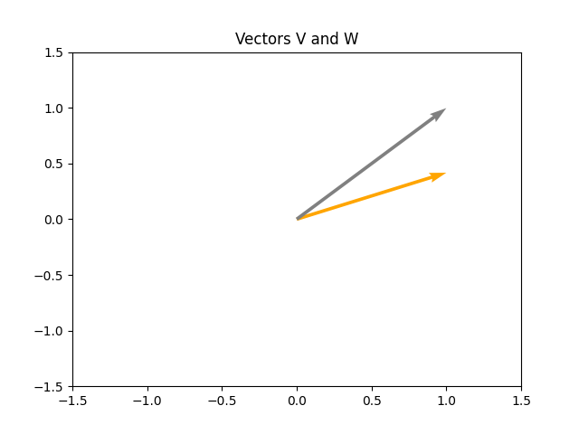

Note
Go to the end to download the full example code
PyAnsys Math basic operations#
This tutorial shows how you can use PyAnsys Math for basic operations on AnsMath vectors and matrices in the APDL memory workspace.
Perform required imports and start PyAnsys#
Perform required imports.
import matplotlib.pyplot as plt
import numpy as np
import ansys.math.core.math as pymath
# Start PyAnsys Math as a service.
mm = pymath.AnsMath()
Create and manipulate vectors#
Create two AnsMath vectors of size 5. The \(\vec{v}\) method is initialized with ones, and the \(\vec{w}\) is filled with random values.
v = mm.ones(2)
w = mm.rand(2)
print(v)
print(w)
GXLNSN :
Size : 2
1.000e+00 1.000e+00
LTZGZN :
Size : 2
4.170e-01 9.972e-01
Plot vectors#
Plot the created vectors.
Use operators on vectors#
Like NumPy vectors, AnsMath vectors can use most of the
standard operators, such as +, -, +=, -=,
and *=.
Here this form is used: \(\vec{z}=\vec{v}+\vec{w}\)
Compute \(\|z\|_2\). (The default norm is nrm2. Note that you
can use .norm('nrm1') or .norm('nrminf') for different normals.
For more information, see help(z.norm).
z = v + w
z.norm()
2.448815734735383
Methods#
Alternatively you can use methods, following the NumPy standards. Available methods are:
mm.add()mm.subtract()mm.dot()
Equivalent operator for addition:
z = v + w
z = mm.add(v, w)
z.norm()
2.448815734735383
Equivalent operator for subtraction:
z = v - w
z = mm.subtract(v, w)
print(z)
YKBNJO :
Size : 2
5.830e-01 2.815e-03
Equivalent dot operation for the product of two vectors:
Dot product : 1.4142068068031222
Perform in-place operations (without copying vectors)#
Perform in-place addition.
v += v
print(v)
GXLNSN :
Size : 2
2.000e+00 2.000e+00
Perform in-place multiplication.
v *= 2
print(v)
GXLNSN :
Size : 2
4.000e+00 4.000e+00
Perform another in-place multiplication.
v /= 2.0
print(v)
GXLNSN :
Size : 2
2.000e+00 2.000e+00
Working with dense matrices#
Allocate two dense matrices with random values.
m1 = mm.rand(4, 5)
m2 = mm.ones(4, 5)
m1, m2
(AnsMath dense matrix (4, 5, AnsMath dense matrix (4, 5)
Add these 2 dense matrices and then scale the result matrix.
m3 = m1 + m2
print(m3)
m3 *= 2
print(m3)
LXUZRW:
[1,1]: 1.417e+00 [1,2]: 1.000e+00 [1,3]: 1.147e+00 [1,4]: 1.186e+00 [1,5]: 1.397e+00
[2,1]: 1.997e+00 [2,2]: 1.128e+00 [2,3]: 1.236e+00 [2,4]: 1.388e+00 [2,5]: 1.936e+00
[3,1]: 1.720e+00 [3,2]: 1.302e+00 [3,3]: 1.092e+00 [3,4]: 1.346e+00 [3,5]: 1.539e+00
[4,1]: 1.933e+00 [4,2]: 1.999e+00 [4,3]: 1.397e+00 [4,4]: 1.670e+00 [4,5]: 1.846e+00
LXUZRW:
[1,1]: 2.834e+00 [1,2]: 2.000e+00 [1,3]: 2.294e+00 [1,4]: 2.373e+00 [1,5]: 2.794e+00
[2,1]: 3.994e+00 [2,2]: 2.256e+00 [2,3]: 2.472e+00 [2,4]: 2.776e+00 [2,5]: 3.871e+00
[3,1]: 3.441e+00 [3,2]: 2.605e+00 [3,3]: 2.185e+00 [3,4]: 2.691e+00 [3,5]: 3.078e+00
[4,1]: 3.865e+00 [4,2]: 3.998e+00 [4,3]: 2.793e+00 [4,4]: 3.339e+00 [4,5]: 3.693e+00
Transpose a matrix.
m4 = m3.T
print(m4)
XHVIOQ:
[1,1]: 2.834e+00 [1,2]: 3.994e+00 [1,3]: 3.441e+00 [1,4]: 3.865e+00
[2,1]: 2.000e+00 [2,2]: 2.256e+00 [2,3]: 2.605e+00 [2,4]: 3.998e+00
[3,1]: 2.294e+00 [3,2]: 2.472e+00 [3,3]: 2.185e+00 [3,4]: 2.793e+00
[4,1]: 2.373e+00 [4,2]: 2.776e+00 [4,3]: 2.691e+00 [4,4]: 3.339e+00
[5,1]: 2.794e+00 [5,2]: 3.871e+00 [5,3]: 3.078e+00 [5,4]: 3.693e+00
As for vectors, methods are available as an alternative to operators.
m3 = mm.add(m1, m2)
print(m3)
AFNRNW:
[1,1]: 1.417e+00 [1,2]: 1.000e+00 [1,3]: 1.147e+00 [1,4]: 1.186e+00 [1,5]: 1.397e+00
[2,1]: 1.997e+00 [2,2]: 1.128e+00 [2,3]: 1.236e+00 [2,4]: 1.388e+00 [2,5]: 1.936e+00
[3,1]: 1.720e+00 [3,2]: 1.302e+00 [3,3]: 1.092e+00 [3,4]: 1.346e+00 [3,5]: 1.539e+00
[4,1]: 1.933e+00 [4,2]: 1.999e+00 [4,3]: 1.397e+00 [4,4]: 1.670e+00 [4,5]: 1.846e+00
Compute a matrix vector multiplication.
mw = m3.dot(m4)
print(mw)
JUPONQ:
[1,1]: 1.536e+01 [1,2]: 1.945e+01 [1,3]: 1.748e+01 [1,4]: 2.180e+01
[2,1]: 1.945e+01 [2,2]: 2.492e+01 [2,3]: 2.220e+01 [2,4]: 2.746e+01
[3,1]: 1.748e+01 [3,2]: 2.220e+01 [3,3]: 2.005e+01 [3,4]: 2.508e+01
[4,1]: 2.180e+01 [4,2]: 2.746e+01 [4,3]: 2.508e+01 [4,4]: 3.176e+01
AnsMath matrices can be identified by printing, viewing their types, or
using the __repr__ method by simply typing out the variable.
Here is an example with an AnsMath matrix.
type(m1)
print(m1)
m1
NAZDQO:
[1,1]: 4.170e-01 [1,2]: 1.144e-04 [1,3]: 1.468e-01 [1,4]: 1.863e-01 [1,5]: 3.968e-01
[2,1]: 9.972e-01 [2,2]: 1.281e-01 [2,3]: 2.361e-01 [2,4]: 3.879e-01 [2,5]: 9.355e-01
[3,1]: 7.203e-01 [3,2]: 3.023e-01 [3,3]: 9.234e-02 [3,4]: 3.456e-01 [3,5]: 5.388e-01
[4,1]: 9.326e-01 [4,2]: 9.990e-01 [4,3]: 3.966e-01 [4,4]: 6.697e-01 [4,5]: 8.463e-01
AnsMath dense matrix (4, 5
Here is an example with an AnsMath vector.
type(w)
print(w)
w
LTZGZN :
Size : 2
4.170e-01 9.972e-01
AnsMath vector size 2
Use NumPy methods on AnsMath objects#
Regardless of the underlying AnsMath object type, you are generally able to perform most NumPy or SciPy operations on these arrays. You can do this in one of two ways.
You can convert a matrix to a NumPy array.
[[4.17021999e-01 1.28124448e-01 9.23385957e-02 6.69746040e-01
4.19194519e-01]
[9.97184808e-01 3.02332568e-01 3.96580726e-01 3.96767469e-01
3.13273513e-01]
[7.20324489e-01 9.99040516e-01 1.86260211e-01 9.35539073e-01
6.85219501e-01]
[9.32557361e-01 1.46755893e-01 3.87910740e-01 5.38816732e-01
5.24548163e-01]
[1.14381197e-04 2.36088976e-01 3.45560725e-01 8.46310918e-01
2.04452249e-01]]
Alternatively, you can use NumPy to compute the maximum of the array.
This works because PyAnsys Math copies over the matrix to the local Python memory and then computes the maximum using NumPy.
print(np.max(apdl_mat))
0.9990405155112967
While this works for most NumPy operations, keep in mind that operations supported within PyAnsys Math (such as adding or multiplying arrays) compute much faster because the data is not copied.
apdl_arr = mm.rand(5, 5)
np_array = apdl_mat.asarray()
print(np.allclose(apdl_mat, np_array))
True
Stop PyAnsys Math#
Stop PyAnsys Math.
mm._mapdl.exit()
/opt/hostedtoolcache/Python/3.10.14/x64/lib/python3.10/site-packages/ansys/mapdl/core/launcher.py:811: UserWarning: The environment variable 'PYMAPDL_START_INSTANCE' is set, hence the argument 'start_instance' is overwritten.
warnings.warn(
Total running time of the script: (0 minutes 0.544 seconds)